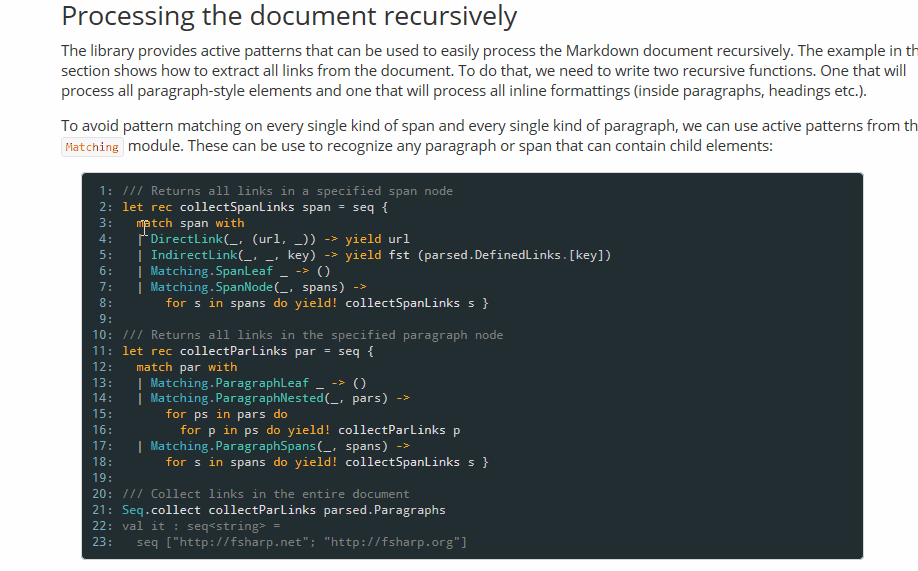
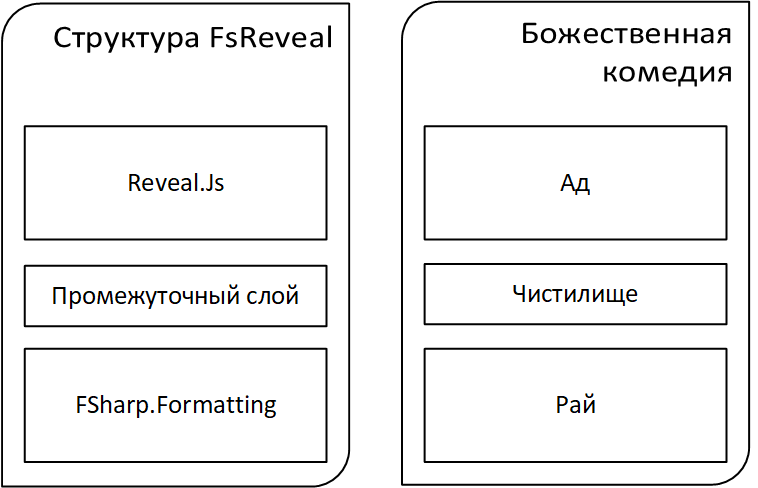

Зайнуллин Фархад
tg: @Kleidemos
Atwood's Law: any application that can be written in JavaScript, will eventually be written in JavaScript.
1: 2: 3: 4: 5: 6: 7: 8: 9: 10: 11: 12: 13: 14: 15: 16: 17: 18: |
|
1: 2: 3: 4: 5: 6: 7: 8: 9: |
|
1: 2: 3: 4: 5: 6: 7: |
|
1: 2: 3: 4: 5: 6: 7: 8: 9: 10: 11: 12: 13: 14: 15: |
|
1: 2: 3: 4: 5: 6: 7: 8: 9: 10: 11: 12: 13: 14: |
|
HTML или LaTex

Приблизительно

1: 2: 3: |
|
С подсказками.
1: 2: 3: 4: 5: 6: 7: 8: 9: |
|
Здесь и далее без подсказок
1: 2: 3: 4: 5: 6: 7: 8: 9: 10: 11: 12: 13: 14: 15: 16: |
|
1: 2: 3: 4: 5: 6: 7: 8: 9: |
|
code from NashFP/rosalind
1: 2: 3: 4: |
|
sql from Dapper
Bayes' Rule
\(\Pr(A|B)=\frac{\Pr(B|A)\Pr(A)}{\Pr(B|A)\Pr(A)+\Pr(B|\neg A)\Pr(\neg A)}\)
1:
|
|
Вбиваем fsreveal в ближайшем поисковике.
1: 2: 3: 4: 5: |
|